Brand Visual / 3D Product System
NXEL Brand Visual Identity
A brand visual identity project for NXEL, translating abstract digital service concepts into a cohesive 3D visual system across website hero visuals, service modules, and public portfolio presentation.
Project Film
Project Impact
I led the core visual direction and asset creation for NXEL, a digital service brand. From official website hero films to service-block visuals, I translated abstract 3D digital production workflows into concrete visual language, creating a digital interface with both technological sophistication and visual consistency while strengthening trust with B-side clients.
Challenge & Execution
Visual language and brand system
I established a brand visual language composed of minimal colors, glass materials, and geometric forms. This style was applied consistently across motion visuals and static website assets to ensure cross-media brand consistency.
Service module visualization
For the four core website services, Digital Sample, 3D Animation, 3D Showcase, and XR Reality Zone, I designed narrative 3D key visuals that transformed complex service items into intuitive website UI assets.
Core process motion translation
In the brand hero film, digital production processes such as 3D scanning, retopology, material refinement, and platform display were translated into fluid motion design, communicating the team's technical depth and commercial value.
Visual Breakdown
A curated sequence of simulation, material close-ups, particle transformation, and final product visuals, showing how the recyclable technology concept was translated into a cinematic brand film.
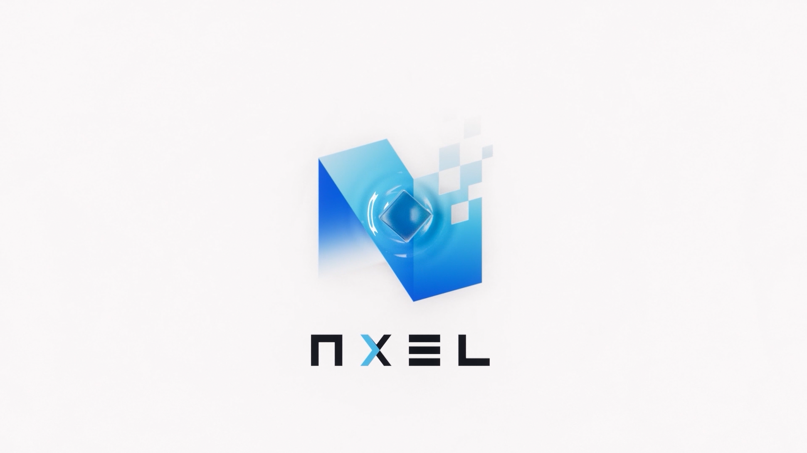
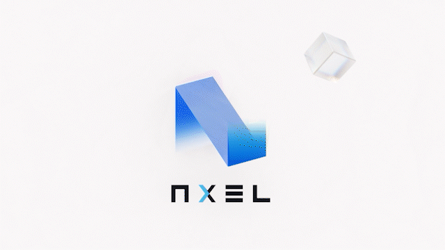
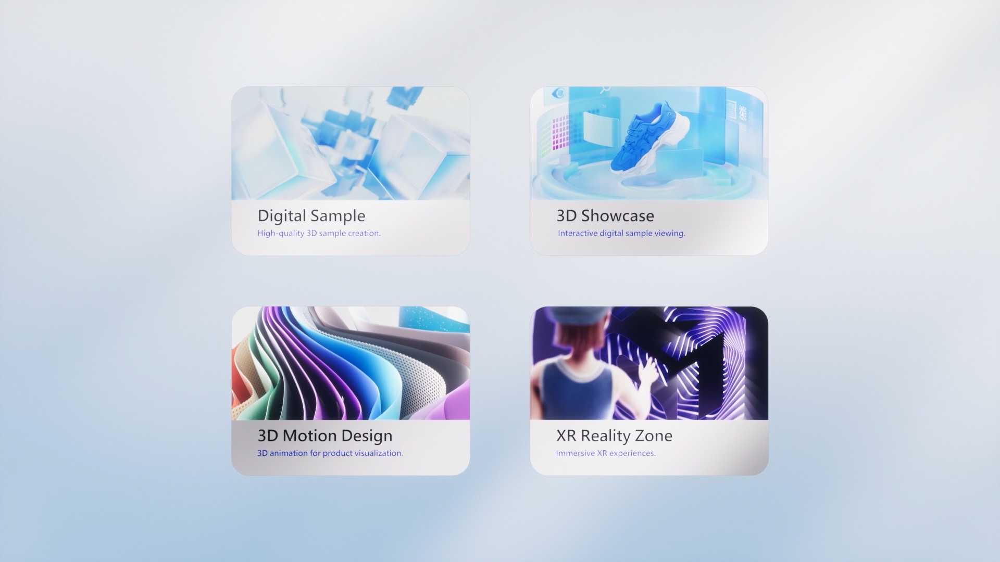
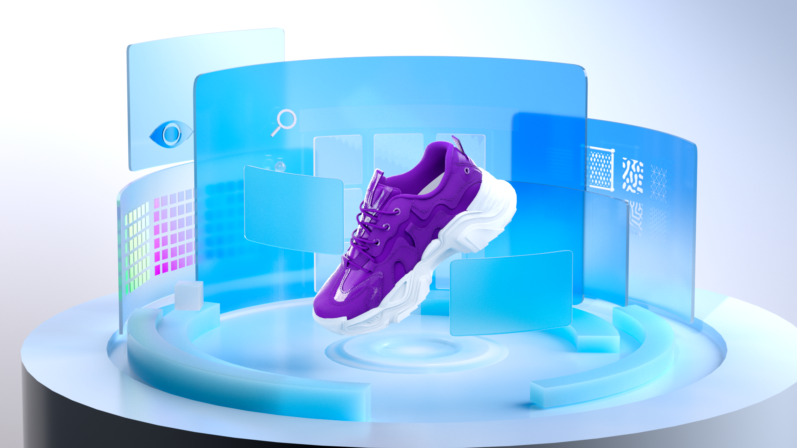
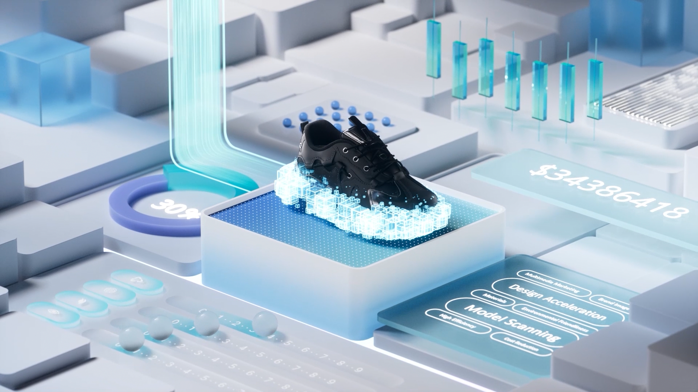

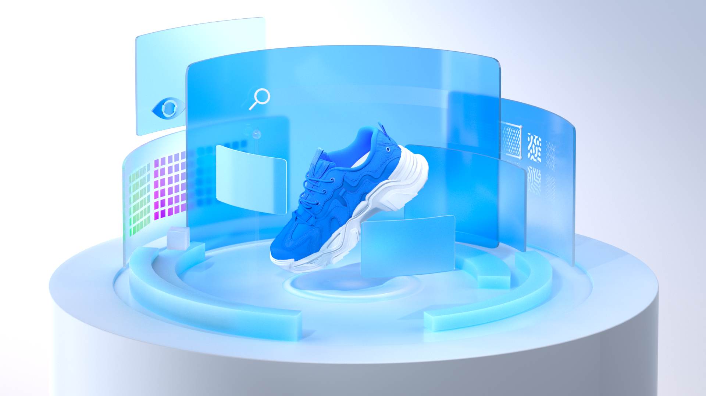
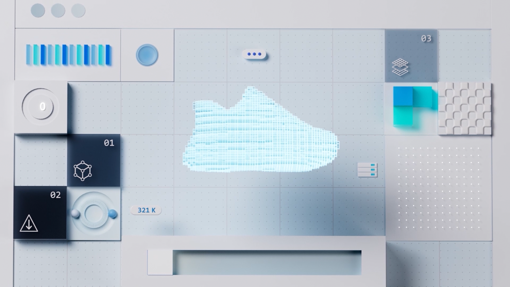
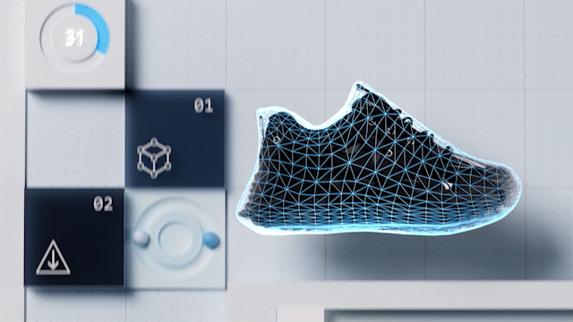
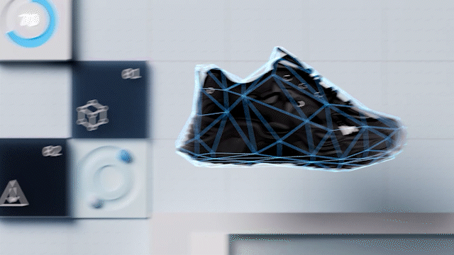
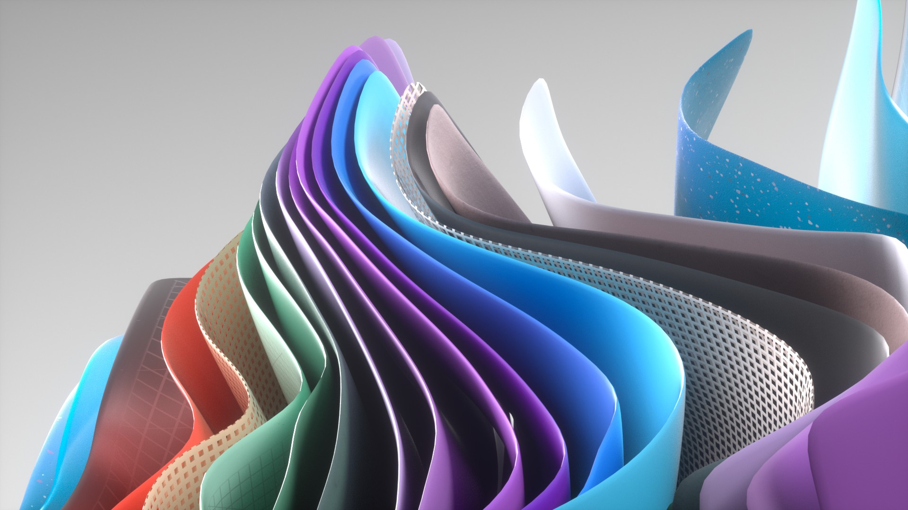
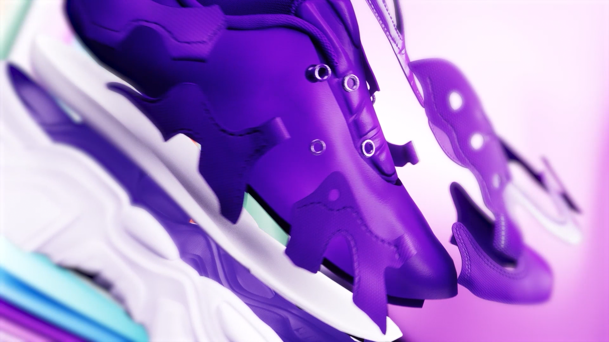
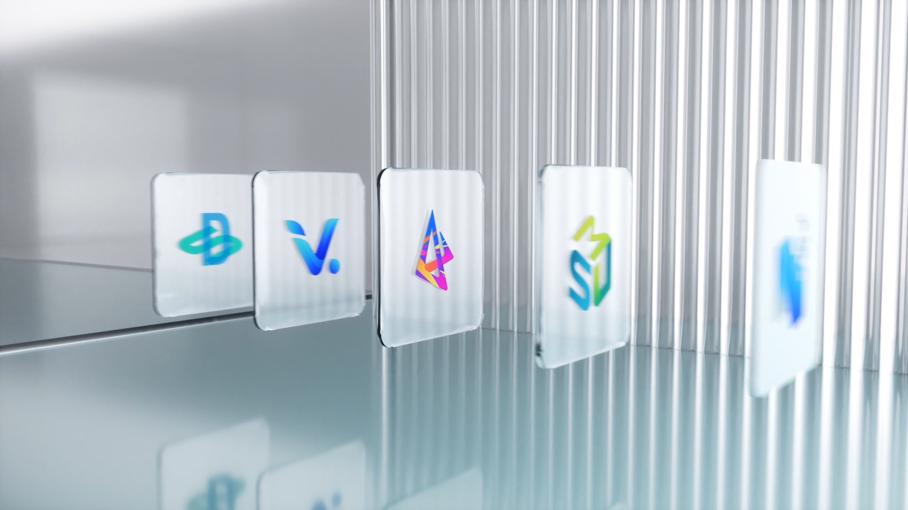

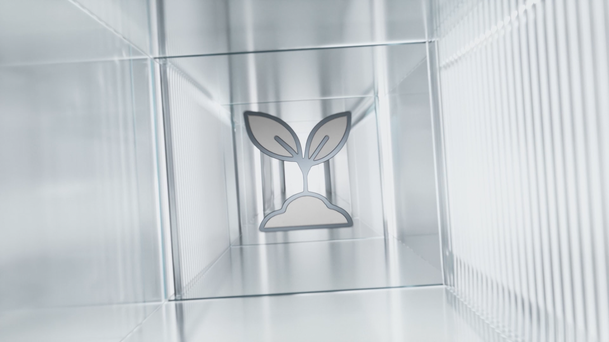
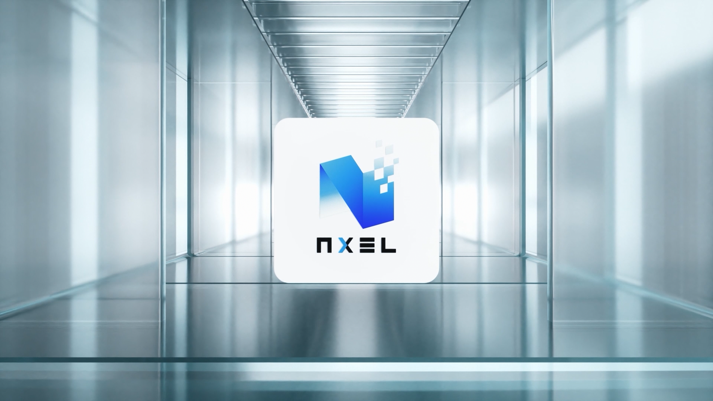
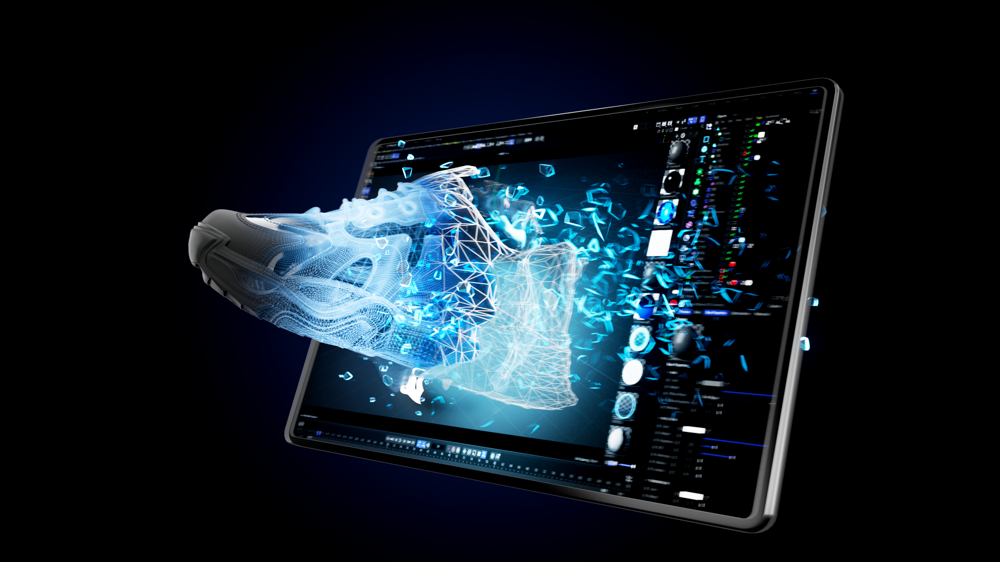
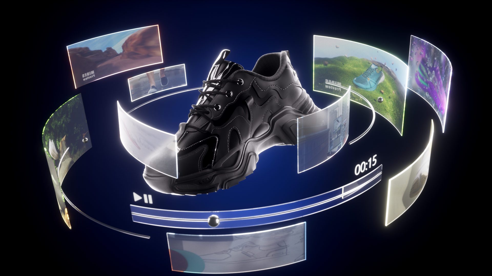
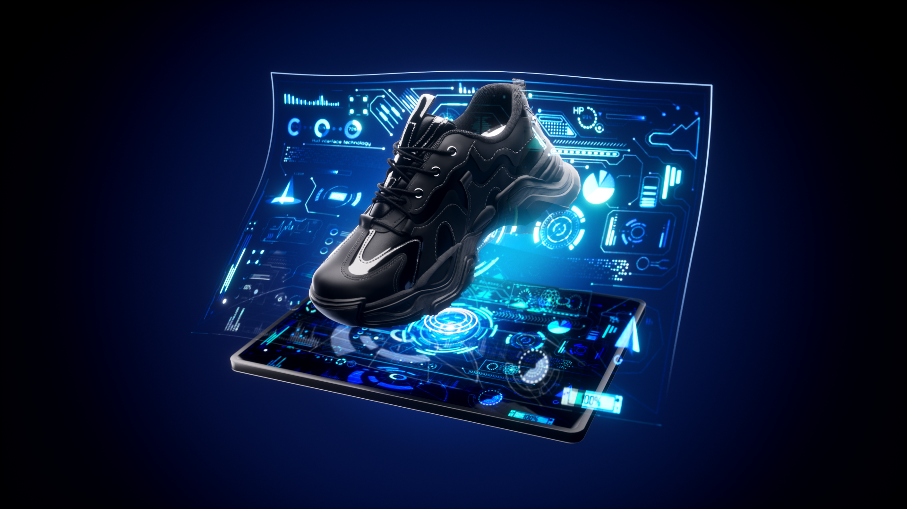
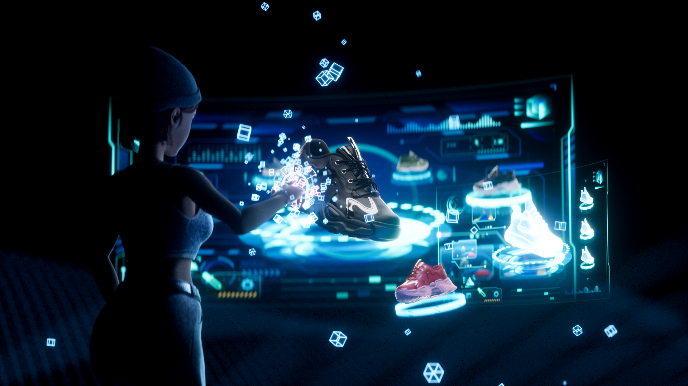
Enterprise AR Solutions
Unity / AR / R&D Prototype
→